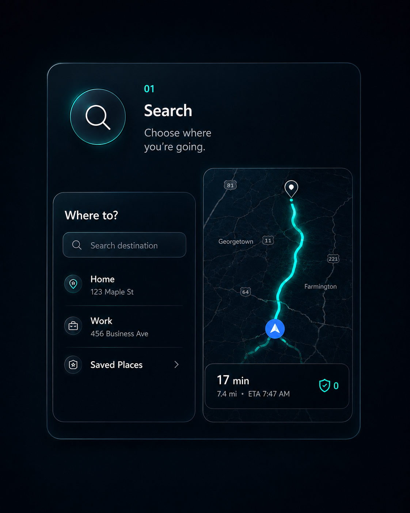
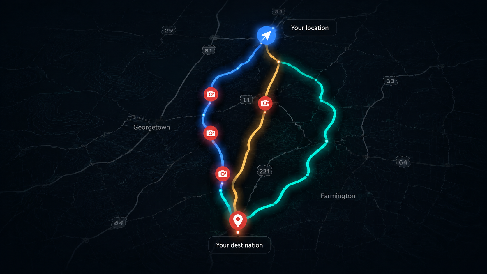
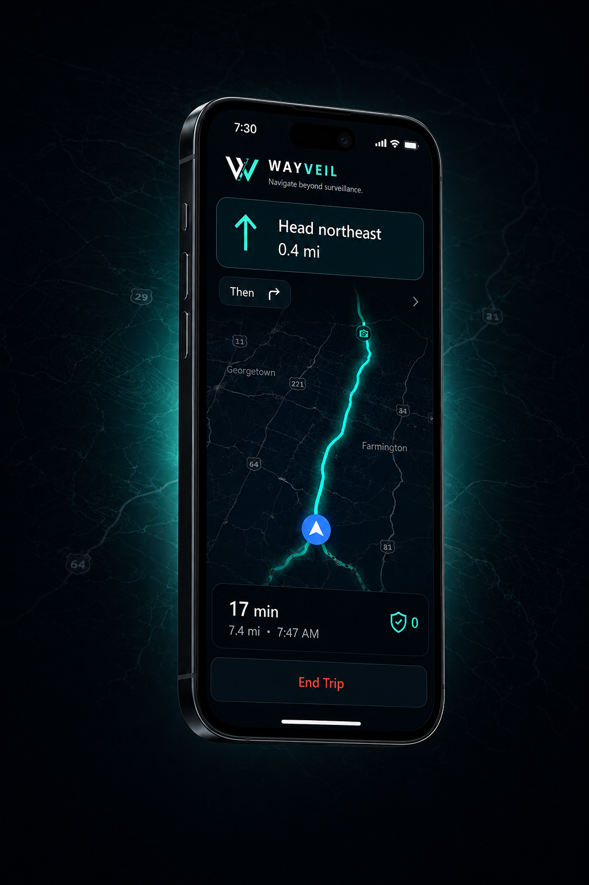
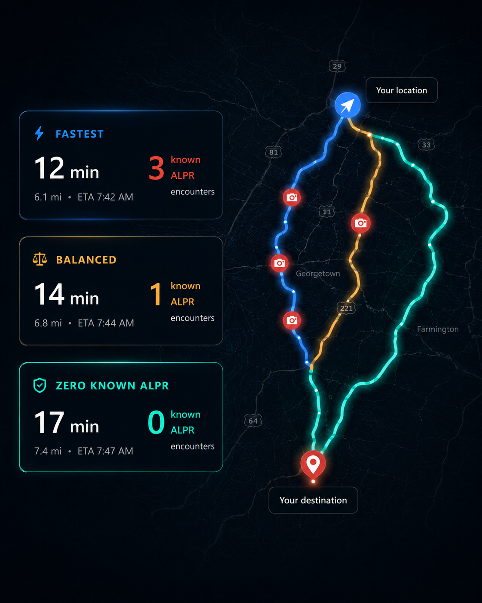
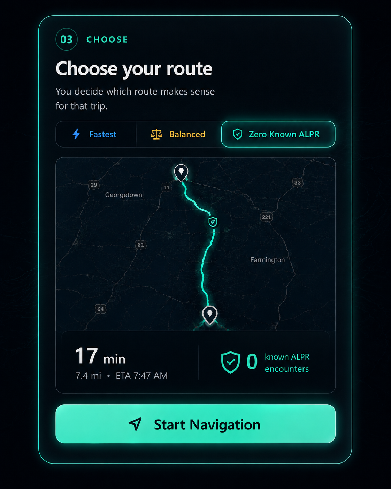
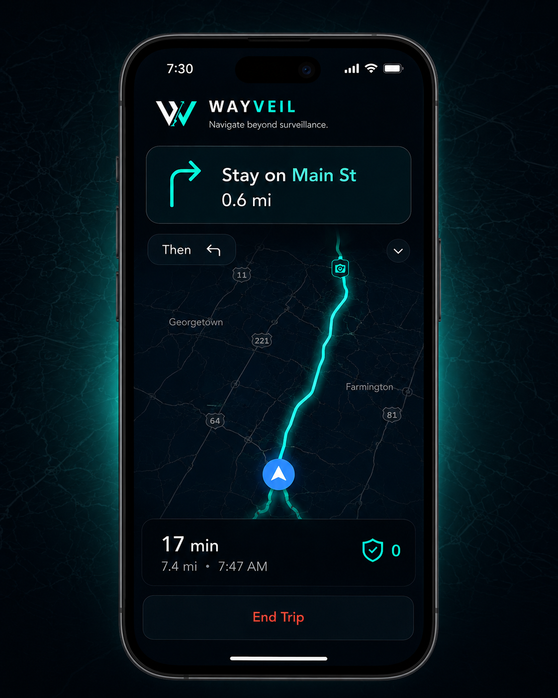
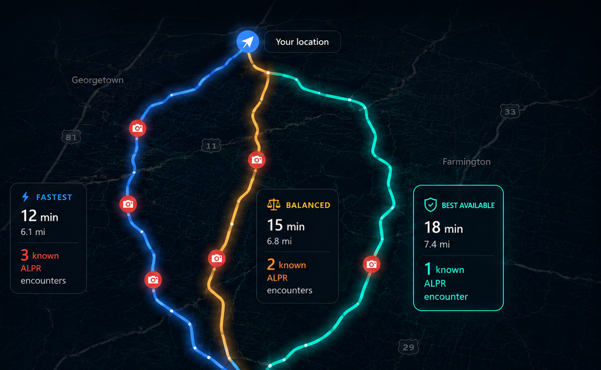

01
Search
Choose where you’re going, just like a normal navigation app.

How It Works
WayVeil compares routes using the things you already care about — time, distance, and the privacy context we know about.
Illustrative demo: times, distances, route geometry, locations, and encounter counts are examples — not live routing or coverage results.


Zero Known ALPR selected: illustrative 17-minute route with 0 encounters in the example known dataset.
How It Works
WayVeil is still navigation. The difference is that supported known exposure becomes part of the route choice before you drive.
Choose where you’re going, just like a normal navigation app.

See the tradeoff between time and the known exposure represented in supported data.

You decide which route makes sense for that drive.

WayVeil navigates normally and recalculates when needed.

Product visuals and route details in this section are illustrative examples.
Best Available
Sometimes every reasonable route includes a known ALPR encounter. WayVeil should say that plainly instead of pretending otherwise.
In that case, Best Available means the supported option with the fewest known encounters among the routes being compared.

Fewest known ALPR encounters in this example. Zero-known is not available in this illustrative trip.
Built around the drive
Directions, route progress, and rerouting stay the primary job.
WayVeil shows supported surveillance intelligence without pretending the dataset knows everything.
WayVeil exposes the tradeoff. The driver chooses the route.
Privacy-sensitive navigation state is designed to remain local wherever practical.
Next
Explore the current public coverage snapshot and the known ALPR data represented there.